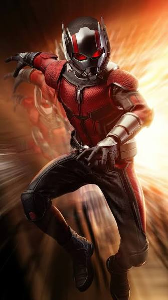
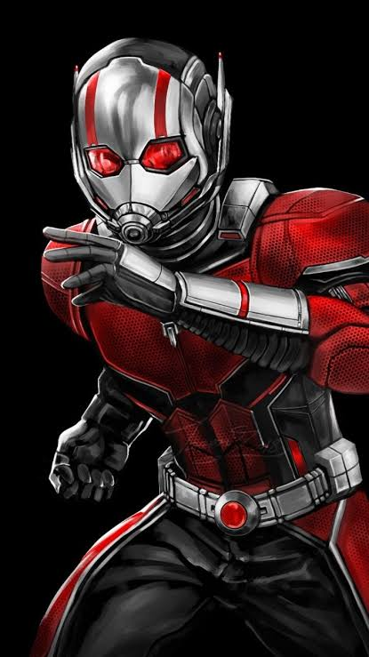
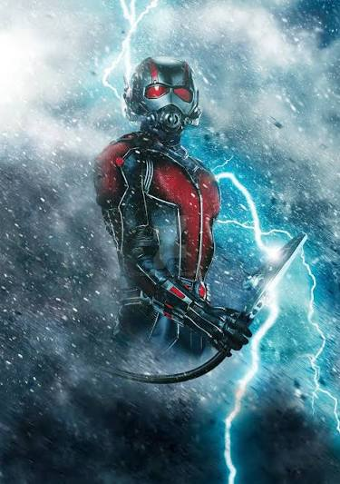

Ant-Man, whose real name is Scott Lang, is a skilled thief and later becomes a superhero in the Marvel Cinematic Universe. He uses a special Ant-Man suit created by scientist Hank Pym. The suit allows Scott to shrink to extremely small sizes while increasing his relative strength, and it can also allow him to grow to a giant size. He can communicate with and control ants using special technology. Scott Lang becomes a member of the Avengers and helps the team during major events, especially by using the Quantum Realm technology. Ant-Man is best known for his size-changing abilities, strength, cleverness, and connection to the Quantum Realm.